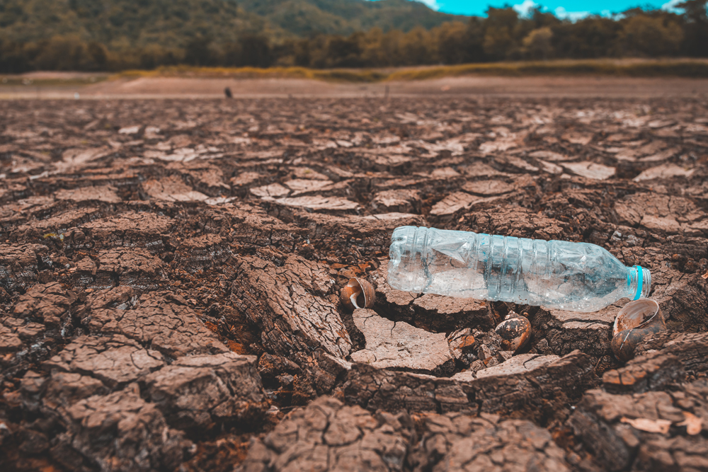
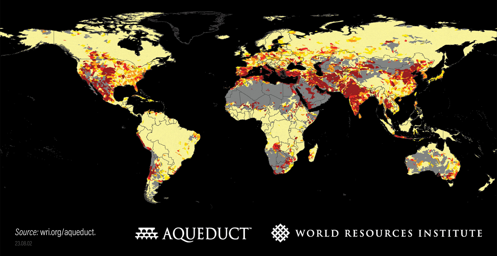
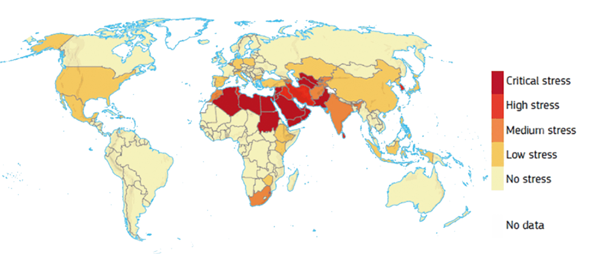
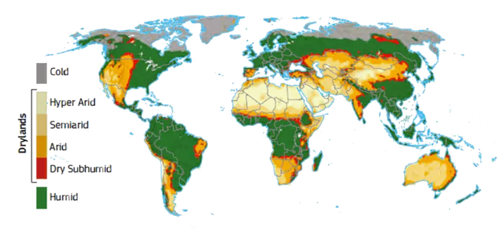
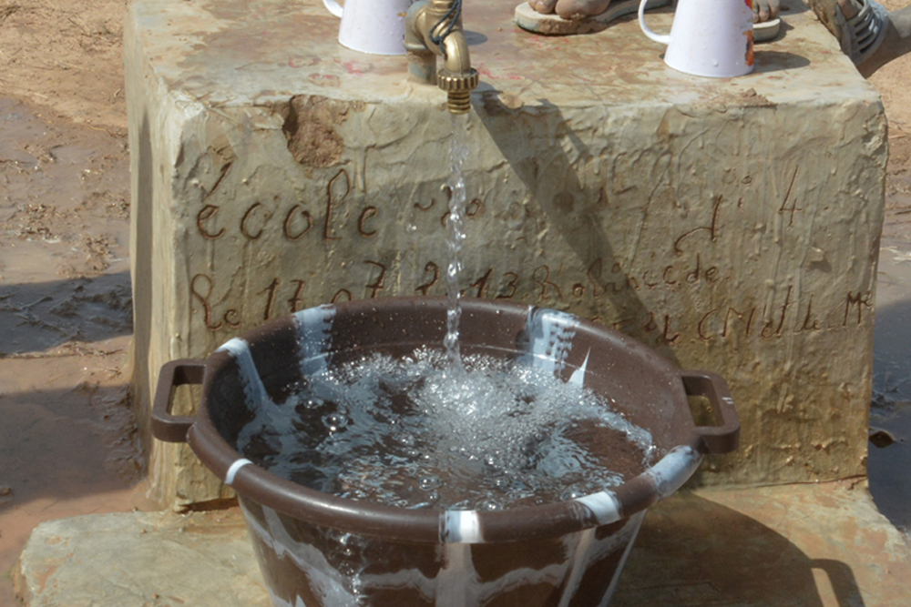
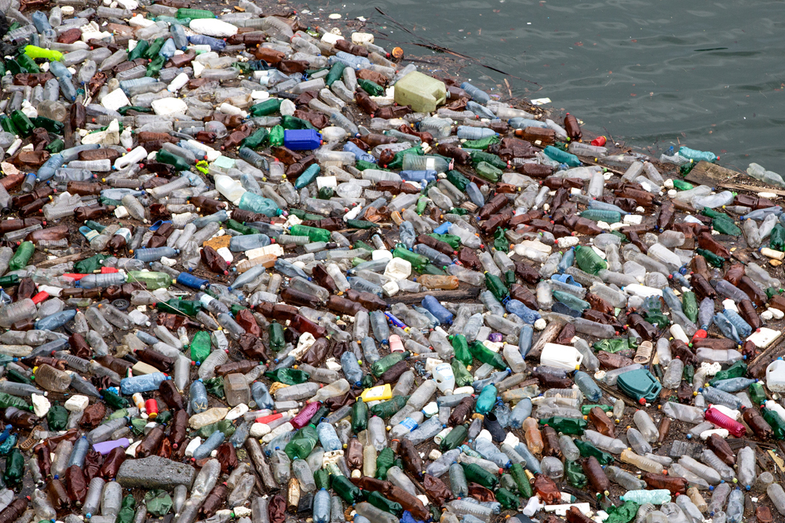

Born from the Air,
Naturally Pure
Free from Contaminants,
Purity You Can Trust
No Infrastructure,
Instantly Available

The distribution of available freshwater in the world is extremely uneven. Nearly 3 billion people globally and more than half of all food production activities are concentrated in arid regions or areas with unstable total water resources, which are facing severe challenges of water scarcity.
The Earth's atmosphere holds as much as 13 trillion tons of water. This water vapor is distributed through atmospheric circulation and is constantly renewed within it.
AtmosWell is committed to leveraging innovative technology to extract the water from the atmosphere, converting it into clean liquid water, thereby helping to address the 3 hydration challenges of humanity.

Data from the "Aqueduct Water Risk Atlas" released by the World Resources Institute (WRI) on August 16, 2023, shows that 25 countries globally—home to a quarter of the world's population—currently experience extremely high water stress every year.
Globally, approximately 4 billion people, or half of the world's population, face water stress for at least one month each year. By 2050, this proportion could reach nearly 60%.
Source: "Aqueduct Water Risk Atlas" released by the World Resources Institute (WRI) on August 16, 2023
In December 2024, the United Nations Convention to Combat Desertification and the Joint Research Centre of the European Commission released the latest "Global Drought Snapshot," which also warned of the global trend of water scarcity. Meanwhile, the "Global Drought Distribution Map" included in the report shows that a significant portion of the humid zone, by climate type classification, consists of non-arid areas.
(Ratio of water withdrawals to water resources)

Source: UN SDG Indicators Database, and Department of Economic and Social Affairs (2023)
(Green areas indicate humid, non-arid regions)

Source: Cherlet, M., Hutchinson, C., Reynolds, J., Hill, J., Sommer, S., & von Maltitz, G. (Eds.). (2018). World Atlas of Desertification (3rd ed.). Luxembourg: Publications Office of the European Union.
At home, turning on the tap yields drinking water. However, in rural areas of developing countries, a significant number of residents must travel long distances to fetch water; even in cities, bottled water is often the preferred choice for safe drinking.
According to UN data, the average walking distance to fetch water for residents in parts of Africa and Asia can reach up to 6 kilometers. In parts of sub-Saharan Africa and South Asia, the average water collection distance may exceed 5 kilometers.
The United Nations Sustainable Development Goal (SDG 6) aims to ensure access to safe drinking water for all and to reduce the water collection distance, particularly alleviating its impact on women and children.


According to comprehensive statistics, the global annual consumption of single-use plastic bottled water exceeds 500 billion bottles, and this number continues to rise. From the extraction of raw petroleum to the transportation and consumption of bottled water, each single-use plastic bottle ultimately generates approximately 110 grams of carbon emissions. Consuming 500 billion bottles of water translates to 55 million tons of carbon emissions.
Reports indicate that a garbage patch spanning 1.3 million square kilometers exists in the Pacific Ocean, with plastic bottles being one of the primary components.
Studies also show that developed countries (such as the United States and Europe) are the main consumer markets, with higher per capita consumption of single-use bottled water. Meanwhile, developing countries (like India and China) are experiencing rapid growth in bottled water consumption, particularly in urbanized areas. This suggests that economic development levels and water scarcity are key factors influencing bottled water usage.